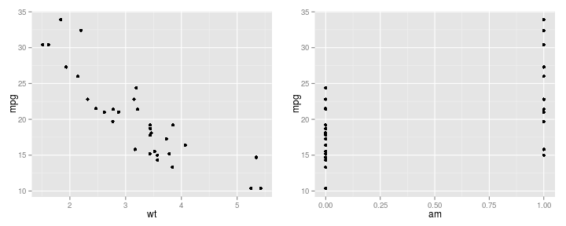

Predict MPG using weight and transmission type
mtcars dataset is used to train the model
A simple linear model
Use the model to predict for new observations
Predict MPG using weight and transmission type
mtcars dataset is used to train the model
A simple linear model
Use the model to predict for new observations
data(mtcars)
mpg_plot <- ggplot(mtcars, aes(x = wt, y=mpg)) + geom_point()
wt_plot <- ggplot(mtcars, aes(x = am, y=mpg)) + geom_point()
multiplot(mpg_plot,wt_plot, cols=2)

fit <- lm(mpg~wt+am, data=mtcars)
summary(fit)
##
## Call:
## lm(formula = mpg ~ wt + am, data = mtcars)
##
## Residuals:
## Min 1Q Median 3Q Max
## -4.5295 -2.3619 -0.1317 1.4025 6.8782
##
## Coefficients:
## Estimate Std. Error t value Pr(>|t|)
## (Intercept) 37.32155 3.05464 12.218 5.84e-13 ***
## wt -5.35281 0.78824 -6.791 1.87e-07 ***
## am -0.02362 1.54565 -0.015 0.988
## ---
## Signif. codes: 0 '***' 0.001 '**' 0.01 '*' 0.05 '.' 0.1 ' ' 1
##
## Residual standard error: 3.098 on 29 degrees of freedom
## Multiple R-squared: 0.7528, Adjusted R-squared: 0.7358
## F-statistic: 44.17 on 2 and 29 DF, p-value: 1.579e-09
The weight turns to be significant factor in determining the MPG
We have build a web page where we can provide new observations and predict the MPG